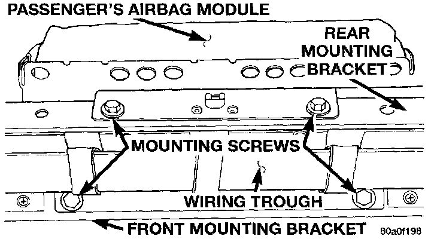

Passenger Side Airbag Module Replacement
1. Disconnect and isolate the battery negative cable. If the airbag module has not been deployed, wait two minutes for the system capacitor to discharge before further service.WARNING: ON VEHICLES EQUIPPED WITH AIR- BAGS, FAILURE TO TAKE THE PROPER PRECAUTIONS COULD RESULT IN ACCIDENTAL AIR-BAG DEPLOYMENT AND POSSIBLE PERSONAL INJURY.
2. Remove both switch pod bezels, the cluster bezel, the knee blocker, the glove box module, and the cowl top trim panel.
3. If the vehicle is so equipped, remove the screw that secures the auto headlamp light sensor/vehicle theft security system lamp near the defroster duct outlet and move it for clearance of the instrument panel top pad.
4. Remove the screws around the perimeter of the instrument panel top pad that secure the top pad to the instrument panel armature.
5. Lift the top pad off of the instrument panel armature and remove it from the vehicle.
6 Remove the two screws that secure the airbag module to the front airbag mounting bracket.

7. Remove the two screws that secure the airbag module to the rear airbag mounting bracket.
8. Unplug the airbag module wire harness connector and remove the airbag module from the instrument panel.
9. If the airbag has been deployed, see the procedure for replacing the rear airbag mounting bracket in this group.
11. When installing the airbag module, be certain that the airbag module wire harness connector latch is fully engaged.
12. Install and tighten the airbag module mounting screws to 11.75 N.m (105 in. lbs.).
NOTE: If the airbag module mounting screws cam not be tightened to the specified torque value, replace the screws with the oversized screws specified in the Mopar Parts Catalog.
13. Reverse the remaining removal procedures to complete the installation.
14. Do not connect the battery negative cable at this time. See Testing and Inspection/Procedures for the proper procedures.